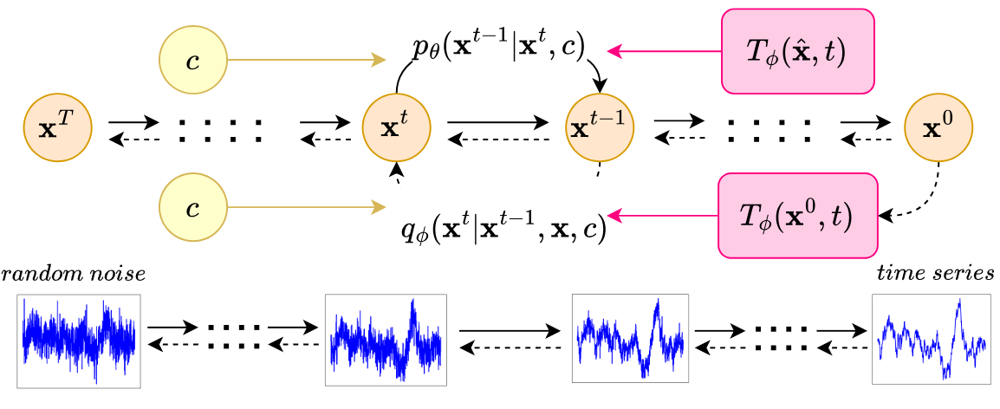
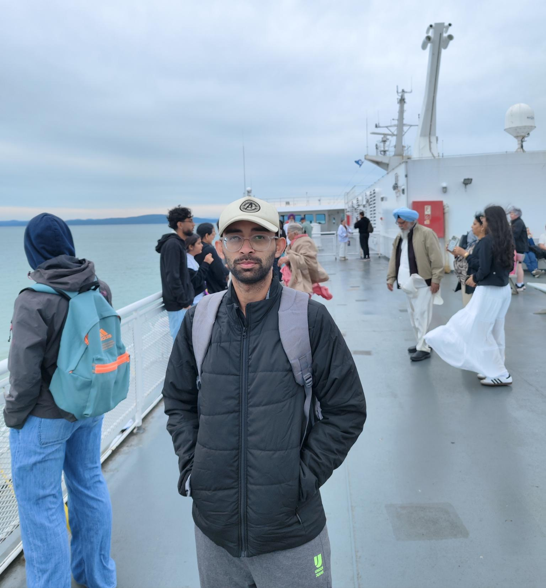
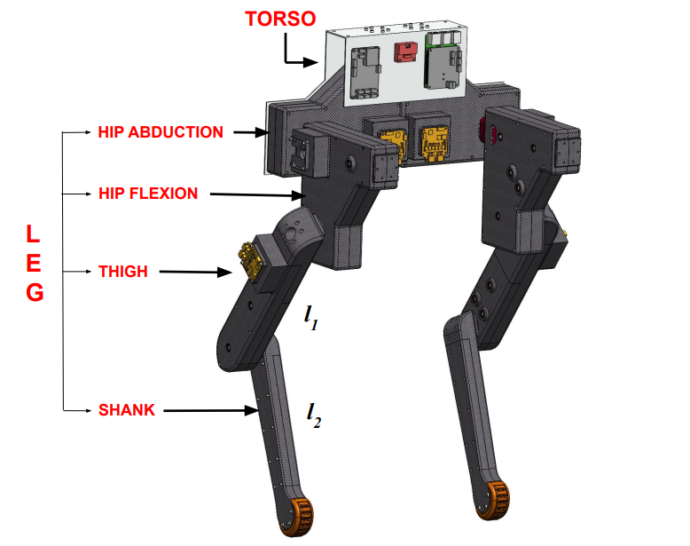
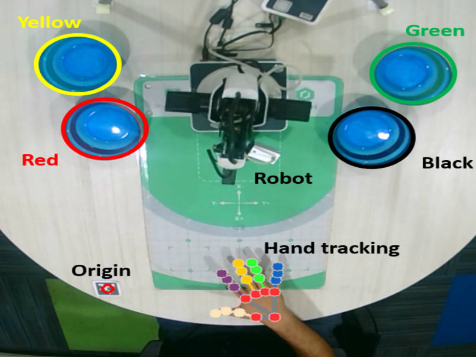

GVS Mothish
PhD Student · Computational and Data Sciences, IISc Bangalore
2025 Google PhD Fellow · Machine Perception
I'm a third-year PhD student at CDS, IISc Bangalore, advised by Dr. Deepak Subramani. I work on generative models, computer vision, neural operators and reasoning in foundation models.
Before my PhD, I did an MTech in Robotics and Autonomous Systems at RBCCPS, IISc, with Dr. Shishir N. Y. at the Stochastic Robotics Lab, building RL- and diffusion-based locomotion for walking robots. I'm broadly interested in intelligent stochastic systems.

Research interests
Publications · * equal contribution
DNOD


ACM IUI 2024
Multimodal Target Prediction for Rapid Human-Robot Interaction
Bayesian fusion of eye gaze and hand motion, with inverse RL to learn human preferences for human-robot handover.
Awards & honors
- Google PhD Fellowship — Machine Perception · Google2025
- 2nd place, Intel oneAPI Hackathon · Intel2023
- ARTPARK Fellowship for Masters research · ARTPARK & MoE, Govt. of IndiaM.Tech
- University Gold Medal, B.Tech · Presidency University2022
- Finalist, Falling Walls Lab India · DWIH & DAAD2019